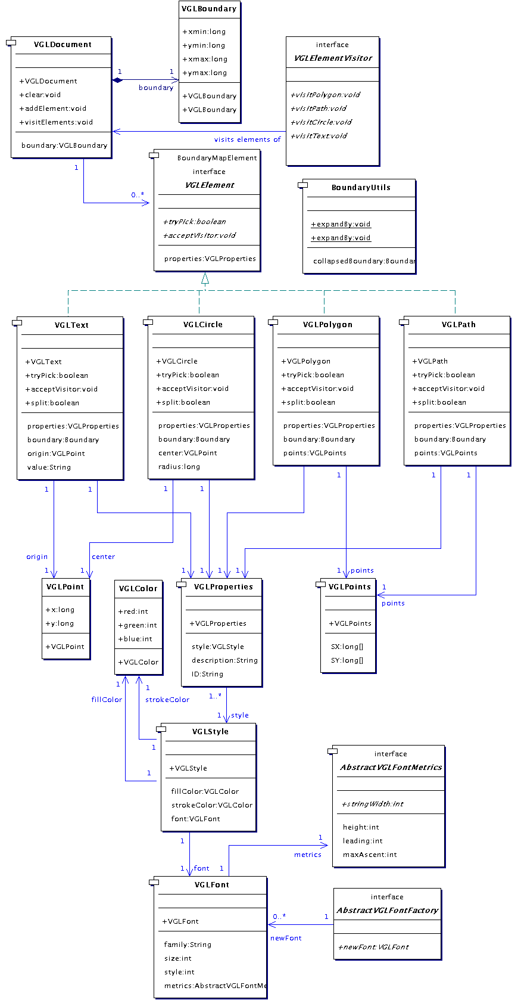
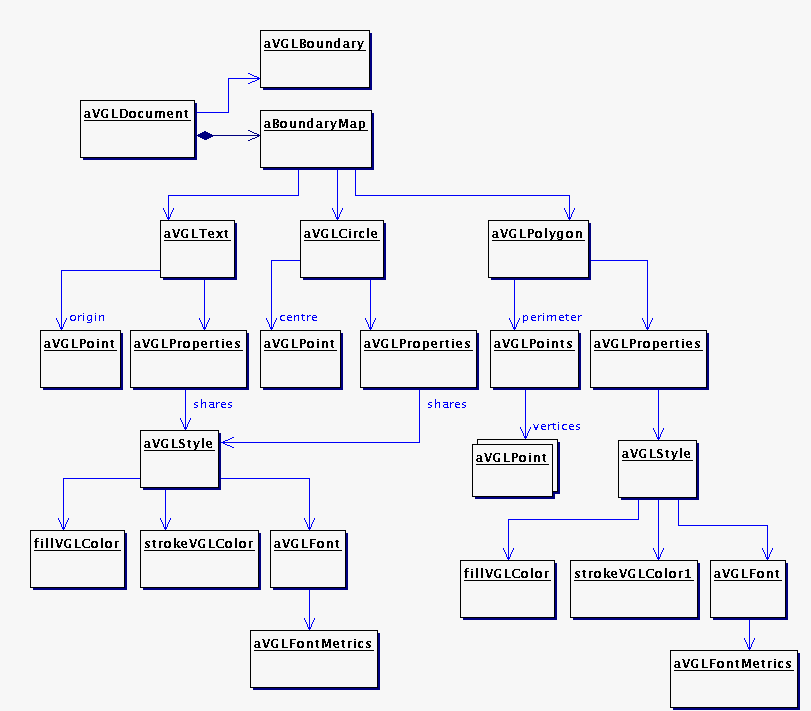

VGLViewer
Implementation
vglDocument |
Introduction|
This package implements a VGL document model which is independent of any windowing toolkit with which it might be rendered. A document can
|
- contain polygons, paths, circles and text,
- allow you to efficiently access (with a Visitor) elements which intersect a given region,
- be constructed using a builder, and
- be loaded from VGL XML.
|
Document Model Architecture|
The following class diagram shows the classes which implement vglDocument.
|

Figure 6. Classes implementing the VGL document model
|
VGLDocument models the document itself, which contains a concrete class implementing VGLElement for each element in the document. The concrete element classes are
|
- VGLPolygon, which represents a filled polygon,
- VGLPath, which represents an open, unfilled path,
- VGLText, which represents a single line of text, and
- VGLCircle, which represents a filled circle.
|
|
With each of the element classes is associated with a VGLProperties, which has
|
- a VGLStyle to specify how the element is to appear when rendered,
- an ID to assign to the element, and
- a short textual description of the element.
|
- a colour to which to fill the element,
- a colour with which to draw the edges of the element, and
- a font in which to draw the element.
|
|
The element will only use VGLStyle properties which apply to it, for example, a VGLPolygon will never use its VGLStyle's font.
|
|
A VGLFont has a user-supplied implementation of AbstractVGLFontMetrics (explained below), which supplies such metrics as the VGLFonts height and width.
|
|
The instance diagram below shows an example of a VGL document model, which contains text, a circle and a polygon. Note how the VGLDocument stores its elements in a BoundaryMap (explained below), and how the text and the the circle share the same style.
|

Figure 7. An example document model instance
|
Now that you know how the document model plugs together, let's take a look at how VGLDocument works.
|
|
VGLElements are added to a VGLDocument with method addElement. A user can then call getElements to visit, with a user-supplied implementation of VGLElementVisitor, VGLElements that intersect a given VGLBoundary. Typically, this would be to render the elements, where the VGLBoundary represents a viewport into the document. Note that VGLElementVisitor is also effectively a Strategy.
|
|
In order to find intersecting elements quickly, VGLDocument stores them in a BoundaryMap (defined in package vgl.boundaryMap). In order to be inserted into the BoundaryMap, VGLElement extends the BoundaryMapElement interface, which requires that the element classes each implement getBoundary to return a Boundary describing their extents. BoundaryUtils is a utility class used by each element class to compute it's Boundary.
|
|
VGLDocument's getElements method will convert it's VGLBoundary parameter to a Boundary for its call to BoundaryMaps getElements method.
|
|
One other BoundaryMapElement interface method is implemented by the element classes: split. This allows the elements to split themselves about a boundary subdivision when required by BoundaryMap. The actual split function is optional, and is implemented by VGLPath, VGLPolygon and VGLCircle, but not by VGLText. See package vgl.boundaryMap for more complete information on this.
|
|
The VGLDocument itself is able to describe the total extents of its VGLElements by providing a VGLBoundary. This is rather useful if we want to render the whole document, scaled to fit some available space perhaps.
|
Windowing Toolkit Independence|
A VGL document model is designed to be independant of any windowing toolkit (AWT, Swing, SWT etc.) which might be used to render it. This independence was trivial to achieve for everything in the model except for VGLText elements. A VGLText element needs to know the extents of its text in order to compute its Boundary. To enable this, it must be possible to obtain some metrics of its VGLFont (held by the VGLStyle within its VGLProperties). Note that metrics for a given font may well vary between windowing toolkits.
|
|
This problem is solved by leaving it up to the user of package vglDocument to implement AbstractVGLFontMetrics and AbstractVGLFontFactory.
|
|
A VGLFont must be given an implementation of AbstractVGLFontMetrics on instantiation, so that it can provide it when required through its getMetrics method. The users implementation of AbstractVGLFontFactory is expected to generate an instance of AbstractVGLFontMetrics to plug into each VGLFont product that it creates. If you were to use vglDocument with AWT, for example, you might have the newFont method of your AbstractVGLFontFactory implementation
|
- create a temporary java.awt.Font to specifications,
- create a java.awt.FontMetrics from the Font and some available java.awt.Component,
- wrap the FontMetrics in an implementation of AbstractVGLFontMetrics, then
- return the AbstractVGLFontMetrics implementation.
|
|
Note that this trick offloads the (potentially complex) job of maintenance or generation of font metrics onto the windowing toolkit. It also allows vglDocument to be more easily ported from Java to C++ (ie. for OpenGL).
|
Composition over Inheritance|
As an excercise, and in order to demonstrate composition as an alternative to inheritance, I made VGLElement an interface rather than the usual abstract class that this sort of element tends to be. To do this, I took all the stuff which would have been implemented in VGLElement and split it out into a VGLProperties, to be associated with its concrete implementations.
|
Document Model Utilities|
The utils sub-package defines two classes for creating VGLDocuments: VGLDocumentBuilder, which provides a handy bunch of methods for building a VGLDocument, and VGLDocumentLoader, which drives a VGLDocumentBuilder to build a VGLDocument as it parses a VGL XML source. Read about these in the documentation for package vgl.vglDocument.utils.
|
|